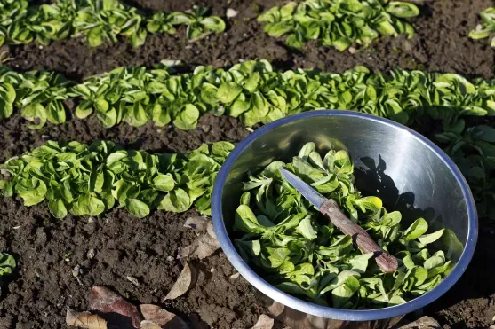

Motovilec podaljša sezono svežih listov v hladnejši del leta. Sejemo ga pozno poleti ali jeseni, na vrtu pa se lahko umesti na prostor po prejšnjem posevku. Uporaben je tudi v balkonski posodi, vendar zemlja v njej hitreje zmrzne in se izsuši kot na gredi. Zimski pridelek je zato odvisen od termina setve, odpornosti sorte ter dejanskega vremena, ne le od označenega meseca v koledarju.
Priprava površine in plitva setev
Odstranite ostanke prejšnjega posevka in plevel ter pripravite drobno površino. Sejte plitvo, okvirno 0,5–1 cm, upoštevajoč navodila sorte. Do vznika ne pustite, da se površina povsem izsuši.
Pozno poleti zelo vroča zemlja ni nujno primerna za dober vznik. Če razmere niso ugodne, prilagodite termin in zalivanje. Pregost posevek razredčite na okvirnih 5–10 cm med rozetami.
Jesenska nega v posodi
Za manjši posevek načrtovalnik zahteva vsaj 8 l in 20 cm globine zemlje. Uporabite posodo z odtokom in sončno ali svetlo polsenčno lego. V hladnem vremenu se potreba po vodi zmanjša.
Ob hudih mrzlih obdobjih posodo primerno zaščitite, ne da bi povsem zaprli zračenje. Nobena preprosta zaščita ne zagotovi neprekinjene rasti skozi vso zimo; majhna količina zemlje hitro premrzne.
Kako pobirati rozete
Rozete pobirajte, ko so dovolj velike za uporabo in listi niso zamrznjeni. Začetni okvir osmih do dvanajstih tednov se lahko v hladnem vremenu precej podaljša. Prve rozete preverite pred množičnim pobiranjem.
Odrežite jih nad zemljo in odstranite poškodovane zunanje liste. Zaradi nizke rasti se med listi nabira zemlja, zato jih pred pripravo temeljito operite. Za nežen pridelek ne čakajte do izrazitega cvetenja.
Informativni vodnik za osrednjo Slovenijo. Termine, velikost posode in razmike prilagodite sorti, vremenu in navodilom dobavitelja. Podatki niso napoved dejanskega datuma pobiranja.
Pogosta vprašanja
Ali lahko motovilec pobiram pozimi?
Da, če je posevek dovolj razvit in razmere dovoljujejo. Zamrznjenih listov ne pobirajte; počakajte, da se odtalijo.
Zakaj jesenski posevek raste tako počasi?
Z nižjimi temperaturami in krajšim dnem se rast upočasni. Pozna setev lahko pomeni pobiranje šele ob izboljšanju razmer.